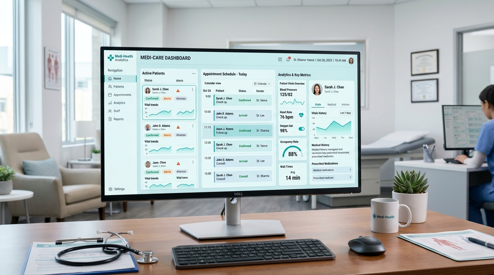

01
Software Engineering
Full-stack applications, enterprise systems, APIs, databases, architecture, authentication, business workflows.
I build software, engineer systems, work with data, and solve technology problems across applications, infrastructure, networks, and cybersecurity.
“Software is only as dependable as the network carrying it. I engineer both with disciplined architecture and operational rigor.”
I am a Computer Science graduate from Federal University, Birnin Kebbi, working at the convergence of full-stack software development, systems architecture, cybersecurity hardening, and physical network engineering.
My approach is rooted in systems thinking: building robust, business-critical software like the Sunglow Pharmacy Management & POS Platform and Horizon Hope Healthcare System, while simultaneously architecting the underlying enterprise infrastructure — high-capacity Starlink Business satellite arrays, Cisco Catalyst & MikroTik routing fabrics, 4K IP CCTV surveillance grids, and structured fiber cabling.
Whether deploying multi-tenant web applications, segmenting enterprise VLANs to protect financial transactions, or designing data pipelines, I deliver technology that functions deterministically under real-world pressure.
Structured engineering capabilities covering software development, systems, networking, security, data, and mobile platforms.
Full-stack applications, enterprise systems, APIs, databases, architecture, authentication, business workflows.
Network architecture, routing, switching, wireless systems, MikroTik, server infrastructure, LAN/WAN environments.
Security analysis, authentication, access control, system hardening, security-aware application development.
Data analysis, data science, intelligent systems, AI-assisted workflows, analytics.
Business systems, POS platforms, school management systems, operational software, technology integration.
Cross-platform mobile application development for iOS and Android with responsive native device integration.
Every platform below is a real, functional software product built to solve business, healthcare, institutional, and community challenges.
Full-stack dispensary and point-of-sale platform handling inventory tracking, expiry date monitoring, hardware barcode scanning, and multi-register sales reconciliation.

Centralised clinic and hospital management portal enabling patient intake, electronic medical records (EMR), appointment dispatch, and clinical department triage.
Structured esports tournament and league management platform handling team rosters, automated standings, and player statistics.
End-to-end tournament orchestration platform with dynamic single/double-elimination bracket generation, player seeding, and live match scoring.
Multi-tenant ecosystem with subdomain routing, shared authentication, and unified administrative management hosting multiple product lines.
Full-featured stock tracking platform with real-time level monitoring, purchase order automation, supplier management, and financial reconciliation.
Fitness tracking platform featuring custom routine builders, weight & rep logs, interactive workout analytics, and progress visualization charts.
End-to-end hospitality management solution with real-time room availability calendar, guest check-in/out flows, automated invoicing, and admin dashboard.
Agricultural empowerment portal providing rural women farmers with resource directories, weather forecasting, training guides, and cooperative market access.
Institutional school management portal handling online student admissions, academic term grading, report card generation, and curriculum calendars.
Physical datacenter racks, high-performance Starlink satellite uplinks, Cisco/MikroTik core VLAN routing fabrics, and enterprise IP CCTV grids.
Rooftop high-performance parabolic satellite dish installations with ruggedized outdoor Cat6A cabling, surge suppression, and dual-WAN automated failover for zero downtime.
Enterprise-grade network segmentation via 802.1Q VLANs. Complete isolation of financial POS terminals, surveillance cameras, management consoles, and guest Wi-Fi.
High-definition PoE IP camera grids connected to central multi-terabyte NVR RAID storage, featuring AI perimeter tripwires, night vision, and encrypted remote RTSP access.
Standards-compliant cable management with high-density patch panels, labeled trunk drops, fiber optic SFP+ uplinks, and certified Fluke line testing for noise-free transmission.
Interactive diagnostic tool to inspect live simulated network telemetry, routing configs, surveillance statuses, and application health.
Organized technical proficiencies across frontend, backend, databases, infrastructure, networking, security, and developer tools.
JavaScript (ES6+) · TypeScript · React · Next.js · Vue.js 3 · HTML5 · Semantic CSS3 · Tailwind CSS
Node.js · Express · Laravel (PHP) · Python · REST APIs · WebSockets · Microservices · JWT / RBAC
MySQL · PostgreSQL · SQLite · MongoDB · Redis · Relational Schemas · Indexing & Query Optimization
Linux (Ubuntu / Debian) · Nginx Reverse Proxy · Apache · Docker · VPS / cPanel · Git & GitHub
Cisco Catalyst Switches · MikroTik RouterOS · Starlink Business · 802.1Q VLANs · QoS · IP CCTV · Cat6/Fiber
Role-Based Access Control · TLS/SSL Configuration · Firewall Rules · Network Hardening · Port Auditing
React Native · Expo · Android & iOS · Python (Pandas, NumPy) · Business Intelligence Dashboards
Postman · VS Code · Linux CLI · Bash Scripting · Wireshark · Git Version Control · ESC/POS Hardware APIs
Academic foundation and real-world technology deployments across software systems, networks, and systems engineering.
Completed rigorous degree program with focus on Algorithms & Data Structures, Operating Systems, Computer Networks, Database Architecture, Systems Analysis, and Cybersecurity Principles.
Architected, coded, and deployed the complete pharmacy management and POS system. Implemented barcode scanner integrations, thermal receipt printing, automated expiry alerts, and relational database auditing. Serving daily commercial sales operations.
Conducted physical installation and configuration of commercial Starlink Business satellite dishes, Cisco Catalyst managed switches, MikroTik dual-WAN routing, and 4K IP CCTV surveillance networks with dedicated NVR storage arrays.
Delivered custom web applications, institutional school management systems (Sarki Mudi Academy), agricultural empowerment platforms (NAWIA Zamfara), healthcare record tools (Horizon Hope), and technical consulting for enterprise clients.
Guiding technical standards applied across every line of code and every physical network installation.
Systems must perform deterministically under adverse conditions. I favor proven architecture, clear data modeling, and fault-tolerant network topologies over fleeting tech trends.
True software resilience occurs when the engineer understands the complete stack — from the frontend DOM event down through the server OS, the switch port, and the physical transmission medium.
Access control, encryption, least-privilege configurations, and network segmentation are foundational requirements from day one, never post-deployment afterthoughts.
Technology exists to eliminate manual friction, secure business continuity, and solve tangible human problems with measured, high-yield engineering solutions.
Available for full-stack software development, systems architecture, enterprise network engineering (Cisco / MikroTik / Starlink / CCTV), and technical consulting. Open to contracts, full-time positions, and on-site or remote deployments.